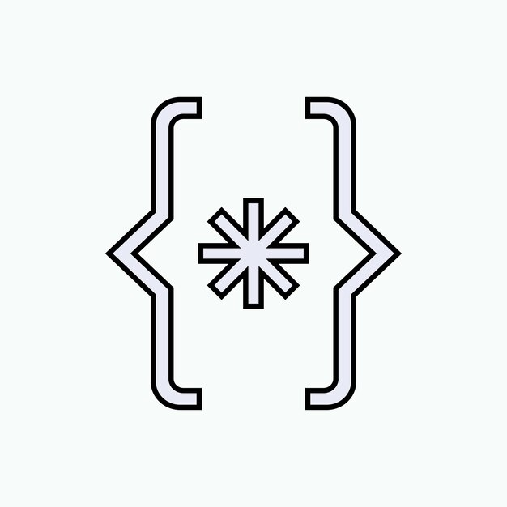

Luis Gustavo
R.C.
Olá! Meu nome é Luis Gustavo, tenho 20 anos e sou natural de Antônio Martins, no estado do Rio Grande do Norte. Sou estudante de Engenharia de Software e cultivo um profundo interesse pela sétima arte, com especial apreço por formas poéticas de expressão audiovisual, como o "tempo esculpido" proposto por Tarkovsky. Minha trajetória em áreas de tecnologia da informação, sobretudo em desenvolvimento de softwares, teve início há cerca de quatro anos, sendo continuamente aprofundada por meio de estudos e projetos práticos. Estudo e pratico predominantemente com as linguagens TypeScript/JavaScript, e Python, mantendo também uma rotina de aprendizado voltada a C e Java. Possuo experiência no desenvolvimento de aplicações principalmente utilizando React, Next.js e Node.js.
Hobbies — interesses e atividades
-
Desenvolvimento web, software e tecnologias
 -
Cinema e sua história
-
Jazz, e seus subgêneros
Países de interesse
| Bandeira | Nome |
|---|---|
 |
China |
 |
Islândia |
 |
Japão |